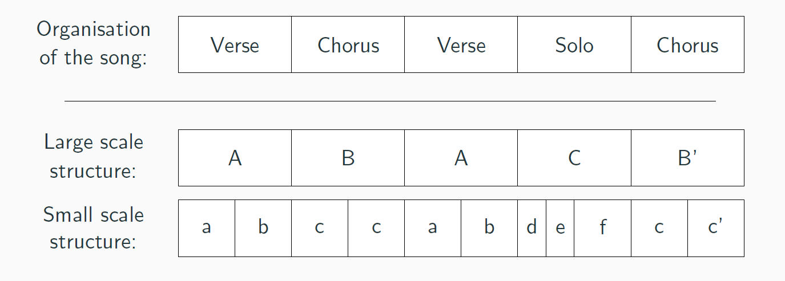

Axel Marmoret
PhD Student, Computer Science Engineer
Structural Segmentation of Music
My PhD focuses on structural segmentation of music, that is, techniques to retrieve a simplified organisation of a song.The core idea in structural segmentation is that music is based on a limited set of segments which are repeated across the song (potentially with alteration).

As presented above, a classical musical structure is the alternation of verses, chorus and solos.
Structure is multi-dimensional, as every segment can be divided in shorter segments, musical phrases or lines, and, conversely, segments may be gathered.
For this task, we have mainly studied two paths (for now):
- Nonnegative Tucker Decomposition (click to expand)
- - In short: it's a tensor factorization technique, similar in some way to NMF (Nonnegative Matrix Factorization) which is largely studied in MIR.
- Polytopic representation of music (click to expand)
- - In short: it's a paradigm which defines a local cost on a musical segment. The goal is then to minimize a global cost.
Music in general
Finally, I am a music passionate (convenient for this subject !).I also play drums (since 13 years or so), and I recently started bass (2 years ago).
Even if my musical practice is not directly related to my research, it is a huge part of my life, and, consequently, has a strong impact on my interest for the field (and on how I conceive music).